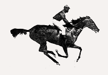
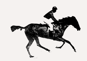
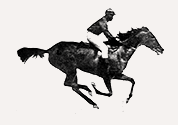
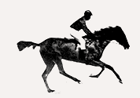
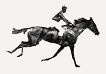
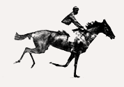
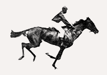
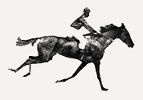
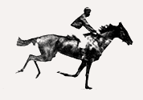
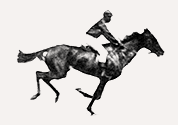

Framenimate is a small javascript plugin to create simple sequential frames animations. It was born from a personal necessity of creating a sequential animation out of a series of photos taken using the sequential shooting function from digital cameras. Enjoy!
Basic Usage
To start a new frame animation is as simples as eeting the framenimate attribute to the wrapper tag where your images/frame are contained:
It is also possible to select the wrappers DOM node and create a new instance of animation for this target(s) through Javascript with new Framenimate and set some options:
var element = document.querySelectorAll('.frames');
var animation = new Framenimate(element, {
speed: 400,
smooth: 0.5,
reverse: true
});
Methods
Framenimate has also some methods for animation manipulation:
var rvrs = document.querySelectorAll('.rvrs');
var play = document.querySelectorAll('.play');
var stop = document.querySelectorAll('.stop');
var next = document.querySelectorAll('.next');
var prev = document.querySelectorAll('.prev');
var goto = document.querySelectorAll('.goto');
var rang = document.querySelectorAll('.rang');
rang[0].setAttribute('max', animation.totalFrames)
rang[0].addEventListener('mousemove', function(){
animation.stop()
if (rang[0].value > 0) animation.goTo(rang[0].value)
})
rvrs[0].addEventListener('click', function(){
animation.reverse()
})
play[0].addEventListener('click', function(){
animation.play()
})
stop[0].addEventListener('click', function(){
animation.stop()
})
next[0].addEventListener('click', function(){
animation.stop()
animation.next()
})
prev[0].addEventListener('click', function(){
animation.stop()
animation.prev()
})
goto[0].addEventListener('click', function(){
animation.stop()
animation.goTo(10)
})
The github logo animation on scroll, just to give some ideas. Also, as you can see in this example, there are two attributes you can return at any given time once the animation has been started: currentFrame and totalFrames
var gitLogo = document.querySelectorAll('.git-logo');
var gitAnimation = new Framenimate(gitLogo, {
reverse: false,
speed: 100,
})
gitAnimation.goTo(1)
window.addEventListener("scroll", function(){
docHeight = document.body.offsetHeight
animationStep = docHeight/gitAnimation.totalFrames
frame = window.scrollY*1/animationStep
gitAnimation.goTo(parseInt(frame))
console.log(animation.currentFrame);
})


 




 




